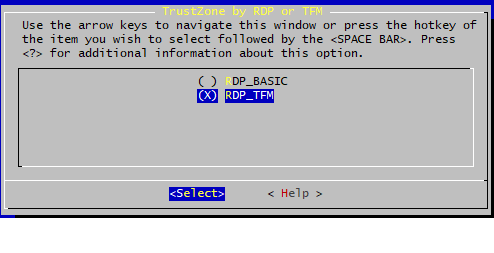
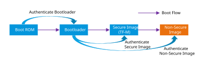
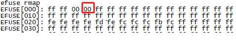
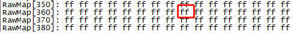
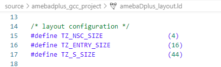

Crypto Service
As suggested in CoAP, TF-M Profile Medium selects TLS_ECDHE_ECDSA_WITH_AES_128_CCM as reference by default, which requires:
ECDHE_ECDSA as key exchange algorithm.
AES-128-CCM (AES CCM mode with 128-bit key) as AEAD algorithm. Platforms can implement AES-128-CCM with truncated authentication tag to achieve less network bandwidth.
SHA256 as Hash function.
HMAC as Message Authentication Code algorithm.
Users can modify the default algorithm in ${CMAKE_SOURCE_DIR}\lib\ext\mbedcrypto\mbedcrypto_config\tfm_mbedcrypto_config_profile_medium.h file, where ${CMAKE_SOURCE_DIR} is {SDK}\component\soc\common\trusted-firmware-m\.
Refer to Chapter 10 Cryptographic operation reference in IHI0086-PSA_Certified_Crypto_API-1.1.2.pdf for more usage.
Initial Attestation
ECC curve secp256r1 should be supported.
Refer to Chapter 4 API reference in IHI0085-PSA_Certified_Attestation_API-1.0.3.pdf for more usage.
Protected Storage Service
Protected Storage (PS): The TF-M PS service implements PSA PS APIs that allow data to be encrypted and the results to be written to potentially untrusted storage. As a reference, the PS service uses the AES-CCM algorithm based on the AEAD encryption to protect the integrity and validity of the data.
Internal Trusted Storage (ITS): The TF-M ITS service implements the PSA ITS APIs to allow writing data to the built-in Flash memory area. The implemention in the current SDK is to use AES-GCM algorithm provided by IPSEC_S, with File ID as the IV and a derived key as the AAD to protect the integrity and confidentiality of the data.
Refer to Chapter 5 API Reference in IHI0087-PSA_Certified_Secure_Storage_API-1.0.2.pdf for more usage.
TF-M OTP
Realtek provides Read Protection (RDP) based on PSA isolation level 1. With the implementation of TF-M, the original Read Protection implementation is called RDP_BASIC, and the TF-M implementation is called RDP_TFM. The OTP bit is the same for both RDP_BASIC and RDP_TFM. After enabling RDP, users need to choose whether to enable RDP_BASIC or RDP_TFM.
{kind=link}

Name |
Address |
Size |
Description |
|---|---|---|---|
RDP_EN_PHY |
Physical 0x368[5] |
1 bit |
When either of these two bits is programmed, RDP is enabled. When the device is in the development or debugging stage, it is recommended to program the RDP_EN_LOG bit, which can be disabled afterward. When the device is in the MP stage, it is recommended to program the RDP_EN_PHY bit to enable RDP permanently. |
RDP_EN_LOG |
Logical 0x3[4] (for test) |
1 bit |
When either of these two bits is programmed, RDP is enabled. When the device is in the development or debugging stage, it is recommended to program the RDP_EN_LOG bit, which can be disabled afterward. When the device is in the MP stage, it is recommended to program the RDP_EN_PHY bit to enable RDP permanently. |
S_IPSEC_Key1 (RDP) |
Physical 0x200 ~ 0x21F |
32 bytes |
Used to store RDP key. For example, the RDP key is [11223344556677889900aabbccddeeff11223344556677889900aabbccddeeff], value 0x11 needs to be programmed into eFuse 0x200, 0x22 into 0x201, and so on. |
S_IPSEC_Key1_R_Protection_EN |
Physical 0x365[3] |
1 bit |
When programmed, S_IPSEC_Key1 cannot be read out except for IPSEC-S. |
S_IPSEC_Key1_W_Forbidden_EN |
Physical 0x365[4] |
1 bit |
When programmed, S_IPSEC_Key1 cannot be modified anymore. |
When RDP_BASIC is enabled, the bootloader directly jumps to the Non-Secure World after loading the image. While RDP_TFM is enabled, the bootloader jumps to the TF-M first, and then jumps to the Non-Secure World after finishing the secure sevices initialization in the TF-M.
{kind=link}

Boot flow with TF-M
How to Use TF-M
Caution
In order to simplify the operation steps, when in the device-development stage, both step 3 and RDP key programming in step 1 can be skipped, which means that the RDP image would be stored in plaintext and the bootloader would not decrypt it. This method should be used only in device-development stage!
Carefully use the efuse wraw command, and it cannot be changed once written. Do not power off or reset during writing!
How to Build TF-M
The following steps illustrate how to enable RDP.
Program RDP-related OTP bits after the system boots up.
RDP enable bit
When in the device-development stage, it is recommended to program
RDP_EN_LOGbit, which can be disabled afterward. Useefuse rmapfirst to check value in 0x3, then enableRDP_EN_LOGbit (0x3[4]).
efuse rmap

efuse wmap 0x3 1 10
When in the device-MP stage, the
RDP_EN_PHYbit should be programmed to enable RDP permanently.
efuse rraw

efuse wraw 0x368 1 DF
RDP key
When in the device-MP stage, RDP key must be programmed. Using the following command to program RDP key:
efuse wraw 0x200 0x20 11223344556677889900aabbccddeeff11223344556677889900aabbccddeeff
RDP key length must be 32 bytes. Key value is defined by users, here we take this for example.
Other security-related bits
For MP devices, some security-related bits should also be programmed for security reasons, such as key read/write protection bits, S_IPSEC_Key1_R_Protection_EN/S_IPSEC_Key1_W_Forbidden_EN bits, etc.
Enable TF-M in SDK
Switch to the directory:
{SDK}\amebadplus_gcc_projectType command
make menuconfigand selectCONFIG TrustZone > Enable TrustZone > TrustZone by RDP or TFMin order
{kind=link}
{kind=link}
Note
To perform the regression test or API test on TF-M, enable the TFM Test Suite and select the appropriate test items as needed.
Regression test: including TF-M secure regression tests (cmake -DTEST_S=ON) and TFM non-secure regression tests (cmake -DTEST_NS=ON)
API test: including tests for STORAGE, CRYPTO, and INITIAL_ATTESTATION
Modify KM4 secure image manifest configuration
The KM4 secure image manifest configuration file is
{SDK}\amebadplus_gcc_project\manifest.json.Set
RDP_ENto 1.Fill in
RDP_IV, which must be 8 bytes, and another 8 bytes is RSIP_IV in app section.Fill in
RDP_KEY, which must be 32 bytes and equal to the key programmed into OTP in Step 1.
1"//": "cert/app share IMG_ID/IMG_VER, rdp img is in app", 2"app": 3{ 4 "IMG_ID": "1", 5 "IMG_VER_MAJOR": 1, 6 "IMG_VER_MINOR": 1, 7 "SEC_EPOCH": 1, 8 9 "HASH_ALG": "sha256", 10 11 "RSIP_IV": "213253647586a7b8", 12}, 13 14"SECURE_BOOT_EN": 0, 15"//": "HASH_ALG: sha256/sha384/sha512/hmac256/hmac384/hmac512, hamc need key", 16"HMAC_KEY": "9874918301909234686574856692873911223344556677889900aabbccddeeff", 17 18"RSIP_EN": 0, 19"//": "RSIP_MODE: 1 is XTS(CTR+ECB), 0 is CTR", 20"RSIP_MODE": 1, 21"CTR_KEY": "6AA34203018334474B25A0600996CA0968AA6228B886FF234B4EB9628B703C0A", 22"ECB_KEY": "E2A0D6500BBF1DD8DC212098C230EB731ECE3A81AA11D0E6E538FA36BBA4FF6E", 23 24"//": "Actual RDP IV is 16Byte which is composed by app RSIP_IV[7:0] + RDP_IV[15:8]", 25"RDP_EN": 0, 26"RDP_IV": "0123456789abcdef", 27"RDP_KEY": "11223344556677889900aabbccddeeff11223344556677889900aabbccddeeff"
Rebuild the project using
makecommand to generate encrypted KM4 secure image automatically as the following table, then download them into Flash.
Project |
Encrypted image |
Download address |
|---|---|---|
km4_bootloader |
km4_boot_all.bin |
0x0800_0000 |
cert.bin |
km0_km4_app.bin |
0x0801_4000 |
km0_application |
km0_km4_app.bin |
0x0801_4000 |
km4_application (non-secure) |
km0_km4_app.bin |
0x0801_4000 |
km4 secure image |
km0_km4_app.bin |
0x0801_4000 |
Note
The IMG3 will be overflow when building TF-M with the default layout in the current SDK, refer to Section Advanced Usages to modify the layout.
Reset the device. When the RDP image is loaded successfully, the following logs will show:
1ROM:[V1.0] 2FLASH RATE:1, Pinmux:1 3IMG1(OTA1) VALID, ret: 0 4IMG1 ENTRY[3000ad39:0] 5[KM4] [MODULE_BOOT-LEVEL_INFO]:IMG1 ENTER MSP:[30009fe4] 6[KM4] [MODULE_BOOT-LEVEL_INFO]:IMG1 SECURE STATE: 1 7[KM4] [MODULE_BOOT-LEVEL_INFO]:Flash ID: c8-65-17 8[KM4] [MODULE_BOOT-LEVEL_INFO]:Flash Read 4IO 9[KM4] FLASH HandShake[0x1 OK] 10[KM4] [MODULE_BOOT-LEVEL_INFO]:KM0 XIP IMG[0c000000:5020] 11[KM4] [MODULE_BOOT-LEVEL_INFO]:KM0 SRAM[20040000:da0] 12[KM4] [MODULE_BOOT-LEVEL_INFO]:KM0 PSRAM[0c005dc0:20] 13[KM4] [MODULE_BOOT-LEVEL_INFO]:KM0 BOOT[20004d00:40] 14[KM4] [MODULE_BOOT-LEVEL_INFO]:KM4 XIP IMG[0e000000:6d60] 15[KM4] [MODULE_BOOT-LEVEL_INFO]:KM4 SRAM[20010000:60] 16[KM4] [MODULE_BOOT-LEVEL_INFO]:KM4 PSRAM[0e006dc0:20] 17[KM4] [MODULE_BOOT-LEVEL_INFO]:IMG2 BOOT from OTA 1 18[KM4] [MODULE_BOOT-LEVEL_INFO]:RDP EN 19[KM4] [MODULE_BOOT-LEVEL_INFO]:DEC KM4 IMG3[30075000:5a0] 20[KM4] [MODULE_BOOT-LEVEL_INFO]:DEC KM4 NSC[20070000:1320] 21[KM4] [MODULE_BOOT-LEVEL_INFO]:IMG3 BOOT from OTA 0 22[KM4] [MODULE_BOOT-LEVEL_INFO]:Start NonSecure @ 0xe000115 ... 23[KM4] [MODULE_BOOT-LEVEL_INFO]:Start TFM @ 0x30071031 ... 24[KM0] [MODULE_BOOT-LEVEL_INFO]:KM0 BOOT UP 25[KM4] [MODULE_BOOT-LEVEL_INFO]:VTOR: 20005000, VTOR_NS:0 26[KM0] [MODULE_BOOT-LEVEL_INFO]:KM0 APP_START 27[KM4] [MODULE_BOOT-LEVEL_INFO]:KM4 APP START 28[KM0] [MODULE_BOOT-LEVEL_INFO]:KM0 CPU CLK: 40000000 Hz 29[KM4] [MODULE_BOOT-LEVEL_INFO]:IMG2 SECURE STATE: 0 30[KM0] [MODULE_BOOT-LEVEL_INFO]:KM0 VTOR:0x20000000 31[KM4] [MODULE_BOOT-LEVEL_INFO]:KM4 BOOT REASON: 0 32[KM0] [MODULE_PMC-LEVEL_INFO]:AP wake event 410 80000008 33[KM4] [MODULE_BOOT-LEVEL_INFO]:KM4 CPU CLK: 200000000 Hz 34[KM0] [MODULE_PMC-LEVEL_INFO]:NP wake event 804 41008308 35[KM0] [MODULE_BOOT-LEVEL_INFO]:KM0 OS START 36[KM4] [CAL131K]: delta:20 target:2441 PPM: 8193 PPM_Limit:30000 37[KM4] [CAL4M]: delta:1 target:320 PPM: 3125 PPM_Limit:30000 38[KM4] [MODULE_BOOT-LEVEL_INFO]:KM4 MAIN 39[KM4] [MODULE_BOOT-LEVEL_INFO]:KM4 START SCHEDULER
Note
The RDP function would not check the authentication of the image. In order to avoid the image being tampering, secure boot function should be used to authenticate it. Refer to Chapter Secure Boot.
How to Call TF-M Service in Non-Secure World
The following secure services are provided in the current SDK:
Partition |
Privileged:sup:[1] |
Model:sup:[1] |
|---|---|---|
Crypto |
PRoT |
SFN |
Initial attestation |
PRoT |
SFN |
Internal trusted storage |
PRoT |
SFN |
Protected storage |
ARoT |
SFN |
Platform |
PRoT |
SFN |
NS agent:sup:[2] |
PRoT |
IPC |
Note
[1] The difference between Privileged and Model is:
Privileged:
In the Secure World, if an ARoT partition needs to access the system resources, it can only do this by calling the APIs provided by PRoT.
In the Non-Secure World, secure services can only be used by calling the PSA APIs.
Model:
One partition must work under as one of the runtime models: Inter-process communication (IPC) model or Secure Function (SFN) model.
For IPC model partition service, there is one thread inside the partition that keeps waiting for signals. SPM converts the service accessing information from the client API call into messages, asserts a signal to the partition, finds out the corresponding partition, and replies partition service returned result to the client. To accomplish this, users need to call
psa_connect()to establish a connection with the partition that provides the service, then callpsa_call()to execute the specified service, and finally callpsa_close()to disconnect the connection. Since the service accesses can be converted to messages and data is processed in local buffer, multiple service accesses can be handled concurrently.For SFN model partition service, users only need to call
psa_call()to execute the specified service, which is similar to calling library functions.
[2] The NS agent is a special partition that does not provide any services. The TF-M will jump to the Non-Secure World via NS agent partition after the TF-M initialization is completed.
After the TF-M build is successful, the SDK will automatically copy the API source code provided by each partition under {SDK}\amebadplus_gcc_project\project_km4\asdk\build_tfm\install\interface\src\ to {SDK}\amebadplus_gcc_project\project_km4\ src_tfm\interface\src, so that the Non-Secure World can call these APIs directly because the API source code will also be compiled automatically.
The tfm_psa_ns_api.c file under {SDK}\amebadplus_gcc_project\project_km4\src_tfm\interface\src\ calls the Non-Secure Callable (NSC) APIs provided by TF-M for data interaction. The following sections illustrate the details of these NSC APIs.
tfm_psa_framework_version_veneer
Items |
Description |
|---|---|
Introduction |
Retrieve the version of the PSA Framework API that is implemented. |
Parameters |
None |
Return |
The version of the PSA Framework |
tfm_psa_version_veneer
Items |
Description |
|---|---|
Introduction |
Retrieve the version of an RoT Service or indicate that it is not present on this system. |
Parameters |
|
Return |
The return value > 0 means the version of the implemented RoT Service |
tfm_psa_connect_veneer
Items |
Description |
|---|---|
Introduction |
Connect to an RoT Service by its SID and Requested version of the RoT Service |
Parameters |
|
Return |
The handle to connect |
tfm_psa_call_veneer
Items |
Description |
|---|---|
Introduction |
Call a secure function referenced by a connection handle |
Parameters |
|
Return |
The psa_status_t structure
|
tfm_psa_close_veneer
Items |
Description |
|---|---|
Introduction |
Close connection to secure function referenced by a connection handle. |
Parameters |
|
Return |
None |
Advanced Usages
This section illustrates the advanced usages of TF-M.
How to Adjust TrustZone Secure Area Size
Config TF-M code location:
Switch to the directory:
{SDK}\amebadplus_gcc_projectType command
make menuconfigand selectCONFIG TrustZone > CONFIG Link Option > IMG3(SecureImage) running on PSRAM or SRAM?in order

Adjust the size of TrustZone Secure Area by modify the flollowing macros (the total size of TZ_NSC_SIZE/TZ_ENTRY_SIZE/TZ_S_SIZE should be a multiple of 4KB).
{kind=link}

amebaDplus_layout.ld file
How to Create a New Partition
Add a new partition folder under
{SDK}\component\soc\common\trusted-firmware-m\secure_fw\partitions\.For example, add a
partition_examplefolder if you want to create a newexampleparition, refer to Rules for Creating New Files in partition_example Folder.Add the following codes to
{SDK}\component\soc\common\trusted-firmware-m\config\profile\profile_medium.cmaketo determine whether to enable the example_partition or not when compiling TF-M (default enable).1############################ PARTITION CONFIGURATION ########################## 2 3set(TFM_PARTITION_CRYPTO ON CACHE BOOL "Enable Crypto partition") 4set(TFM_PARTITION_INTERNAL_TRUSTED_STORAGE ON CACHE BOOL "Enable Internal Trusted Storage partition") 5set(TFM_PARTITION_PLATFORM ON CACHE BOOL "Enable the TF-M Platform partition") 6set(TFM_PARTITION_EXAMPLE OFF CACHE BOOL "Enable the TF-M Example partition") 7set(TFM_PARTITION_PROTECTED_STORAGE ON CACHE BOOL "Enable Protected Storage partition") 8set(TFM_PARTITION_INITIAL_ATTESTATION ON CACHE BOOL "Enable Initial Attestation partition") 9set(SYMMETRIC_INITIAL_ATTESTATION OFF CACHE BOOL "Use symmetric crypto for inital attestation") 10set(TFM_PARTITION_FIRMWARE_UPDATE OFF CACHE BOOL "Enable firmware update partition")
Add the following codes to
{SDK}\component\soc\common\trusted-firmware-m\secure_fw\partitions\CMakeLists.txtto compile the source files underpartition_examplefolder.1add_subdirectory(lib/runtime) 2add_subdirectory(crypto) 3add_subdirectory(initial_attestation) 4add_subdirectory(protected_storage) 5add_subdirectory(internal_trusted_storage) 6add_subdirectory(platform) 7add_subdirectory(partition_example) 8add_subdirectory(firmware_update) 9add_subdirectory(ns_agent_tz) 10add_subdirectory(ns_agent_mailbox) 11if (CONFIG_TFM_SPM_BACKEND_IPC)
Add the following codes to
{SDK}\component\soc\common\trusted-firmware-m\secure_fw\CMakeLists.txtto add the compile path.1target_include_directories(tfm_config 2 INTERFACE 3 ${CMAKE_CURRENT_SOURCE_DIR}/include 4 ${CMAKE_CURRENT_SOURCE_DIR}/partitions/crypto 5 ${CMAKE_CURRENT_SOURCE_DIR}/partitions/firmware_update 6 ${CMAKE_CURRENT_SOURCE_DIR}/partitions/initial_attestation 7 ${CMAKE_CURRENT_SOURCE_DIR}/partitions/internal_trusted_storage 8 ${CMAKE_CURRENT_SOURCE_DIR}/partitions/platform 9 ${CMAKE_CURRENT_SOURCE_DIR}/partitions/partition_example 10 ${CMAKE_CURRENT_SOURCE_DIR}/partitions/protected_storage 11 ${CMAKE_CURRENT_SOURCE_DIR}/spm/include 12 ${CMAKE_BINARY_DIR}/generated/interface/include 13)
Add the following codes to
{SDK}/component/soc/common/trusted-firmware-m/tools/tfm_manifest_list.yamlSpecify partition ID (pid), where pid needs to be unique
tfm_partition_example.yaml: used to automaticlly generate the
load_info_tfm_partition_example.cfile, which is located at{SDK}\amebadplus_gcc_project\project_km4\asdk\build_tfm\generated\secure_fw\partitions\partition_example\auto_generated.
1{ 2 "description": "TFM partition example Partition", 3 "manifest": "../secure_fw/partitions/partition_example/tfm_partition_example.yaml", 4 "output path": "secure_fw/partitions/ partition_example", 5 "conditional": "TFM_PARTITION_EXAMPLE", 6 "version_major": 0, 7 "version_minor": 1, 8 "pid": 300, 9 "linker_pattern": { 10 "library_list": [ 11 "*tfm_*partition_example.*" 12 ] 13 } 14}
Rules for Creating New Files in partition_example Folder
The partition_example folder under the path {SDK}\component\soc\common\trusted-firmware-m\secure_fw\partitions\partition_ example contains at least the following files:
CMakeLists.txt
tfm_partition_example.yaml
partition_example.c
partition_example.h
CMakeLists.txt
The CMakeLists.txt file specify how to compile, where,
- target_sources:
the compiled source files
- target_include_directories:
the path to the compiled source files
1if (NOT TFM_PARTITION_EXAMPLE)
2 return()
3endif()
4
5cmake_minimum_required(VERSION 3.15)
6cmake_policy(SET CMP0079 NEW)
7
8add_library(tfm_psa_rot_partition_example STATIC)
9
10target_sources(tfm_psa_rot_partition_example PRIVATE
11 partition_example.c
12)
13
14# The generated sources
15target_sources(tfm_psa_rot_partition_example
16 PRIVATE
17 ${CMAKE_BINARY_DIR}/generated/secure_fw/partitions/partition_example/auto_generated/intermedia_tfm_partition_example.c
18)
19target_sources(tfm_partitions
20 INTERFACE
21 ${CMAKE_BINARY_DIR}/generated/secure_fw/partitions/partition_example/auto_generated/load_info_tfm_partition_example.c
22)
23
24# Set include directory
25target_include_directories(tfm_psa_rot_partition_example
26 PRIVATE
27 $<BUILD_INTERFACE:${CMAKE_CURRENT_SOURCE_DIR}>
28 ${CMAKE_BINARY_DIR}/generated/secure_fw/partitions/partition_example
29)
30target_include_directories(tfm_partitions
31 INTERFACE
32 ${CMAKE_BINARY_DIR}/generated/secure_fw/partitions/partition_example
33)
34
35target_link_libraries(tfm_psa_rot_partition_example
36 PRIVATE
37 platform_s
38 tfm_config
39 tfm_sprt
40)
tfm_partition_example.yaml
The tfm_partition_example.yaml file specify how to generate the file load_info_tfm_partition_example.c
- sid:
needs to be unique
- stateless_handle:
must be less than 32 and needs to be unique
TFM_PARTITION_EXAMPLE_SERVICE determines the name of .sfn, that is the default value of .sfn in the automaticlly generated file load_info_tfm_partition_example.c
1{
2 "psa_framework_version": 1.1,
3 "name": "TFM_SP_PARTITION_EXAMPLE",
4 "type": "PSA-ROT",
5 "priority": "NORMAL",
6 "model": "SFN",
7 "entry_init": "tfm_example_init",
8 "stack_size": "PLATFORM_SP_STACK_SIZE",
9 "services": [
10 {
11 "name": "TFM_PARTITION_EXAMPLE_SERVICE",
12 "sid": "0x00000090",
13 "non_secure_clients": true,
14 "connection_based": false,
15 "stateless_handle": 16,
16 "minor_version": 1,
17 "minor_policy": "STRICT"
18 },
19 ],
20}
1.services = {
2 {
3 .name_strid = STRING_PTR_TO_STRID("TFM_PARTITION_EXAMPLE_SERVICE"),
4 .sfn = ENTRY_TO_POSITION(tfm_partition_example_service_sfn),
5 .signal = 1,
6
7 .sid = 0x00000090,
8 .flags = 0
9 | SERVICE_FLAG_NS_ACCESSIBLE
10 | SERVICE_FLAG_STATELESS | 0xf
11 | SERVICE_VERSION_POLICY_STRICT,
12 .version = 1,
13 }
14},
partition_example.c
The partition_example.c file needs to implement the entry function and provide functions for stateless SFN services.
Note
tfm_example_init: corresponds toentry_initintfm_partition_example.yaml
tfm_partition_example_service_sfn: corresponds to name of services intfm_partition_example.yaml
1psa_status_t tfm_partition_example_service_sfn(const psa_msg_t *msg)
2{
3 switch (msg->type) {
4 case TFM_EXAMPLE_API_ID_IOCTL:
5 return example_ioctl_psa_api(msg);
6 default:
7 return PSA_ERROR_NOT_SUPPORTED;
8 }
9
10 return PSA_ERROR_GENERIC_ERROR;
11}
12
13psa_status_t tfm_example_init(void)
14{
15 /* Initialise the non-volatile counters */
16
17 return PSA_SUCCESS;
18}
Providing TF-M APIs to Other Partitions
Add the following files under the folder {SDK}\component\soc\common\trusted-firmware-m\interface\:
{SDK}\component\soc\common\trusted-firmware-m\interface\src\tfm_example_api.c
{SDK}\component\soc\common\trusted-firmware-m\interface\include\tfm_example_api.h
The handle parameter used by function psa_call in tfm_example_api.c is automatically generated by TF-M. That is, in the file \interface\include\psa_manifest\sid.h, the type parameter corresponds to the type of msg->type in the file partition_example.c.
TF-M APIs used by Non-Secure World: Add the following codes to
{SDK}\component\soc\common\trusted-firmware-m\cmake\ install.cmake, and compile the project to provide the APIs used by Non-Secure World.
1####################### export headers #########################################
2
3if(TFM_PARTITION_EXAMPLE)
4 install(FILES ${INTERFACE_INC_DIR}/tfm_example_api.h
5 DESTINATION ${INSTALL_INTERFACE_INC_DIR})
6endif()
7
8if(TFM_PARTITION_PLATFORM)
9 install(FILES ${INTERFACE_INC_DIR}/tfm_platform_api.h
10 DESTINATION ${INSTALL_INTERFACE_INC_DIR})
11endif()
12
13####################### export sources #########################################
14
15if(TFM_PARTITION_EXAMPLE)
16 install(FILES ${INTERFACE_SRC_DIR}/tfm_example_api.c
17 DESTINATION ${INSTALL_INTERFACE_SRC_DIR})
18endif()
19
20if(TFM_PARTITION_PLATFORM)
21 install(FILES ${INTERFACE_SRC_DIR}/tfm_platform_api.c
22 DESTINATION ${INSTALL_INTERFACE_SRC_DIR})
23endif()
TF-M APIs used by Secure World: Add the following codes to
{SDK}\component\soc\common\trusted-firmware-m\interface\ CMakeLists.txt, after that you can use the example APIs in Secure World.
1###################### PSA api (S lib) #########################################
2
3target_sources(tfm_sprt
4 PRIVATE
5 $<$<BOOL:${TFM_PARTITION_INITIAL_ATTESTATION}>:${CMAKE_CURRENT_SOURCE_DIR}/src/tfm_attest_api.c>
6 $<$<BOOL:${TFM_PARTITION_CRYPTO}>:${CMAKE_CURRENT_SOURCE_DIR}/src/tfm_crypto_api.c>
7 $<$<BOOL:${TFM_PARTITION_FIRMWARE_UPDATE}>:${CMAKE_CURRENT_SOURCE_DIR}/src/tfm_fwu_api.c>
8 $<$<BOOL:${TFM_PARTITION_INTERNAL_TRUSTED_STORAGE}>:${CMAKE_CURRENT_SOURCE_DIR}/src/tfm_its_api.c>
9 $<$<BOOL:${TFM_PARTITION_EXAMPLE}>:${CMAKE_CURRENT_SOURCE_DIR}/src/tfm_example_api.c>
10 $<$<BOOL:${TFM_PARTITION_PLATFORM}>:${CMAKE_CURRENT_SOURCE_DIR}/src/tfm_platform_api.c>
11 $<$<BOOL:${TFM_PARTITION_PROTECTED_STORAGE}>:${CMAKE_CURRENT_SOURCE_DIR}/src/tfm_ps_api.c>
12 ${CMAKE_CURRENT_SOURCE_DIR}/src/tfm_psa_call_pack.c
13)
Flash Layout of TF-M
Item |
Physical address |
Size |
Description |
Mandatory? |
|---|---|---|---|---|
PS_AREA |
0x081F_4000 |
20KB |
Storing data for the partition service of Protected Storage |
√ |
ITS_AREA |
0x081F_9000 |
16KB |
Storing data for the partition service Internal Trusted Storage |
√ |
OTP_NV_COUNTERS |
0x081F_D000 |
8KB |
Storing data for the partition service of platform, in which 4K is for main data and the other 4K is for backup data Note This partition stores a 32-byte Integration Attestation Key (IAK). Therefore, the SDK uses the GCM algorithm to ensure integrity and confidentiality, employing a derived key as the IV value and the anti-rollback version number as the Additional Authenticated Data (AAD), to prevent new data in this partition from being replaced by old data. (when the version is upgraded, remerber to update the data in this partition first before updating the anit-rollback version number) |
√ |
PSA API Test |
0x081F_F000 |
4KB |
Storing intermediate results during the PSA API Test process |
× |
If users need to modify the size of the corresponding Flash region, modify the file
{SDK}\component\soc\common\trusted-firmware-m\platform\ext\target\realtek\amebadplus\partition\flash_layout.h
#define FLASH_PS_AREA_OFFSET (0x001F4000)
#define FLASH_PS_AREA_SIZE (0x5000) /* 20KB */
#define FLASH_ITS_AREA_OFFSET (FLASH_PS_AREA_OFFSET + \FLASH_PS_AREA_SIZE)
#define FLASH_ITS_AREA_SIZE (0x4000) /* 16KB */
#define FLASH_OTP_NV_COUNTERS_AREA_OFFSET (FLASH_ITS_AREA_OFFSET + \FLASH_ITS_AREA_SIZE)
// 0x1FD000
#define FLASH_OTP_NV_COUNTERS_AREA_SIZE (FLASH_AREA_IMAGE_SECTOR_SIZE * 2) /* 8KB */
#define FLASH_OTP_NV_COUNTERS_SECTOR_SIZE FLASH_AREA_IMAGE_SECTOR_SIZE
If users need to modify the location of the PSA API Test, modify the file
{SDK}\component\soc\common\trusted-firmware-m\lib\ext\psa_arch_tests-src\api-tests\platform\targets\tgt_dev_apis_tfm_amebadplus\target.cfg
// Range of 1KB Non-volatile memory to preserve data over reset. Ex, NVRAM and FLASH
nvmem.num =1;
nvmem.0.start = 0x001FF000;
/*Shall reserve 4KB for sector erase, offset based on flash die */
nvmem.0.end = 0x001FF3FF;
nvmem.0.permission = TYPE_READ_WRITE;